Etapas de la construcción de una casa: el proceso paso a paso, con fotos reales

Construir una casa no es un solo gran trabajo: son etapas que van en orden, y cada una depende de que la anterior quede bien hecha. Te las explico con las fotos de una obra que diseñamos y construimos de principio a fin: la casa Laguna del Sol, en vía a Samborondón.
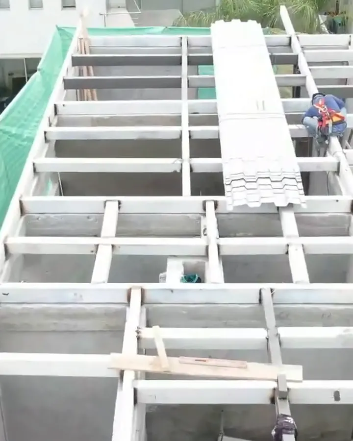
Las 5 etapas de la construcción, en resumen
| Etapa | Qué incluye |
|---|---|
| 1. Proyecto y permiso | Diseño, planos, presupuesto y permiso de construcción |
| 2. Preliminares y cimentación | Limpieza, replanteo, excavación, zapatas, riostras o losa de cimentación |
| 3. Estructura | Columnas, vigas, losas y escaleras |
| 4. Obra gris e instalaciones | Paredes, cubierta, tuberías eléctricas, de agua y de desagüe |
| 5. Acabados y entrega | Enlucidos, pisos, baños, cocina, pintura, exteriores e inspección final |
En México a la etapa de estructura y paredes le dicen obra negra; en Ecuador la llamamos obra gris. Es lo mismo: la casa en pie, sin acabados.
El caso: casa Laguna del Sol, vía a Samborondón
Solar de 580 m², 400 m² de construcción en planta baja y planta alta, más sótano y piscina con ventana subacuática. Hicimos el diseño y la construcción.
Etapa 1: proyecto y permiso
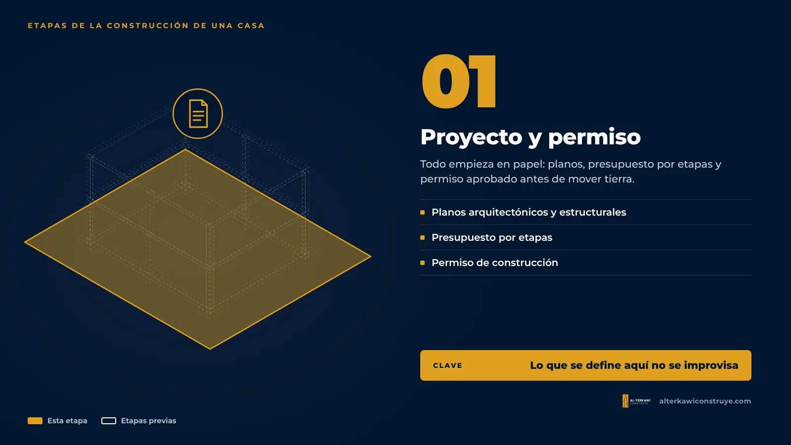
Todo empieza en papel. Antes de mover tierra necesitas los planos arquitectónicos y estructurales, el presupuesto por etapas y el permiso de construcción aprobado. Una casa con sótano y piscina como esta se define aquí: la ventana subacuática, por ejemplo, se calcula en el diseño estructural, no se improvisa en obra.
Si estás en este punto, lee los primeros pasos antes de construir y cómo funciona el permiso de construcción.
Etapa 2: preliminares y cimentación
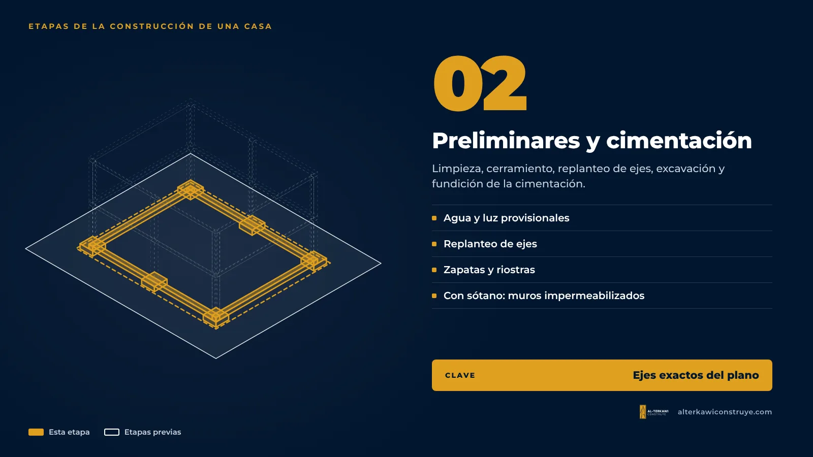
Se limpia el terreno, se cierra la obra, se instalan agua y luz provisionales y se hace el replanteo: marcar en el suelo los ejes exactos del plano. Después se excava y se funde la cimentación. Con sótano, esta etapa es más exigente: hay que excavar más, armar muros que contengan la tierra e impermeabilizarlos antes de rellenar.

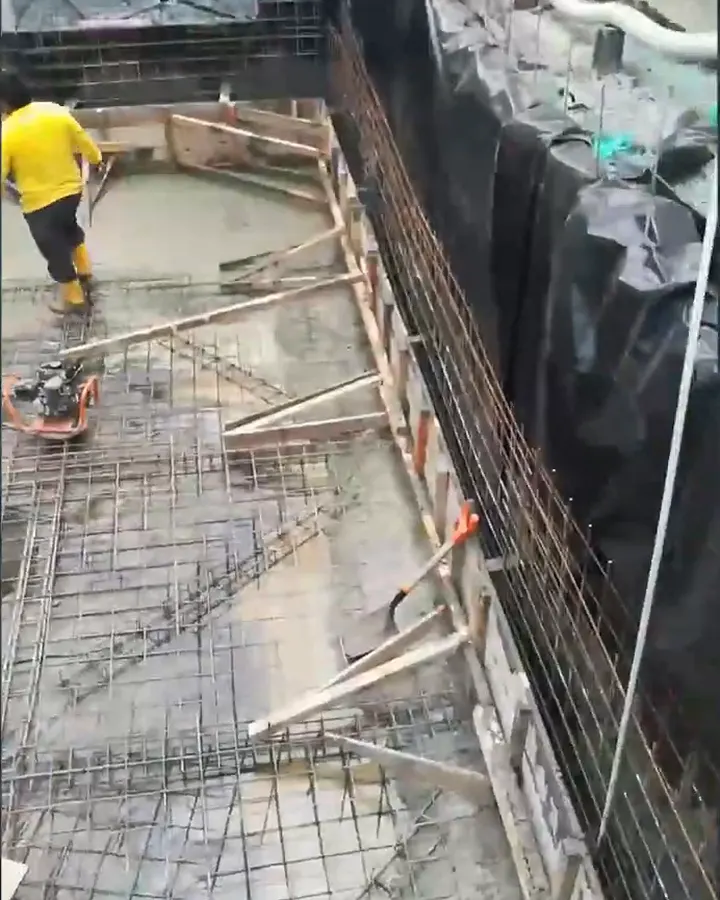
Etapa 3: estructura
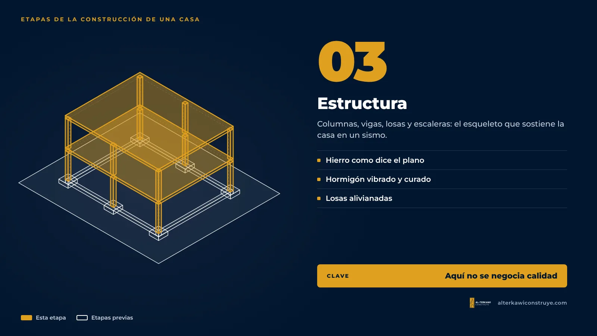
Columnas, vigas, losas y escaleras. Es el esqueleto de la casa y lo que la mantiene en pie en un sismo, así que aquí no se negocia calidad: el hierro va como dice el plano estructural y el hormigón se vibra y se cura. En esta obra las losas se hicieron alivianadas, con casetones, para reducir peso.
Etapa 4: obra gris e instalaciones
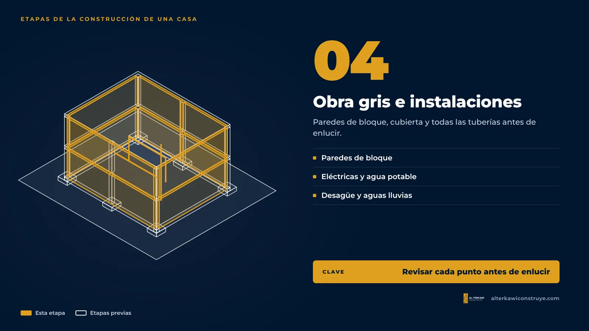
Se levantan las paredes de bloque, se hace la cubierta y, antes de enlucir, se pasan todas las tuberías: eléctricas, de agua potable, de desagüe y de aguas lluvias. Es el momento de revisar que cada punto de luz, tomacorriente y desagüe esté donde va, porque después cambiarlo implica romper.
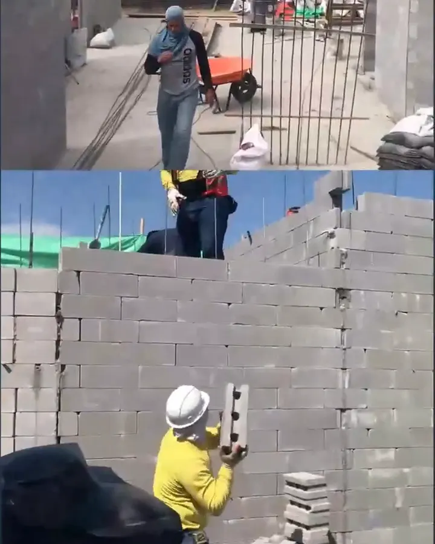

Etapa 5: acabados y entrega
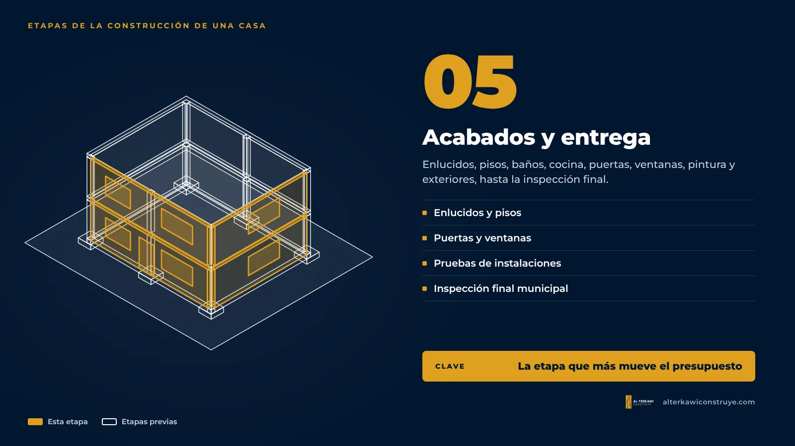
Enlucidos, pisos, baños, cocina, puertas, ventanas, pintura y exteriores. Es la etapa más larga en detalles y la que más mueve el presupuesto, porque depende de los materiales que elijas. El proceso final de la construcción termina con la limpieza, las pruebas de instalaciones y la inspección final municipal, que certifica que lo construido coincide con los planos aprobados.
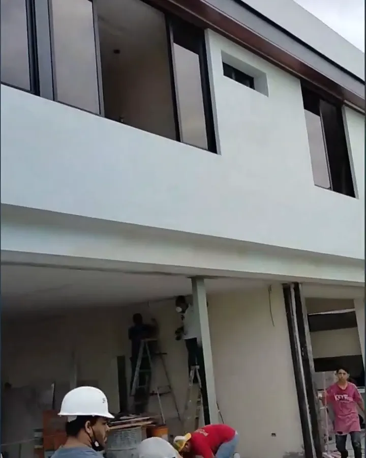
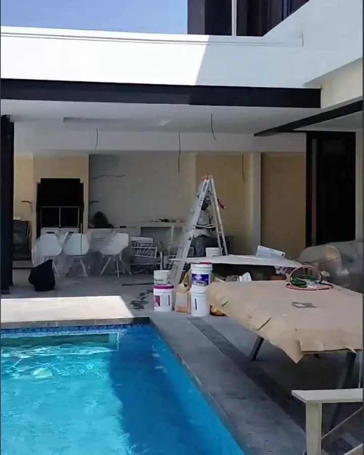
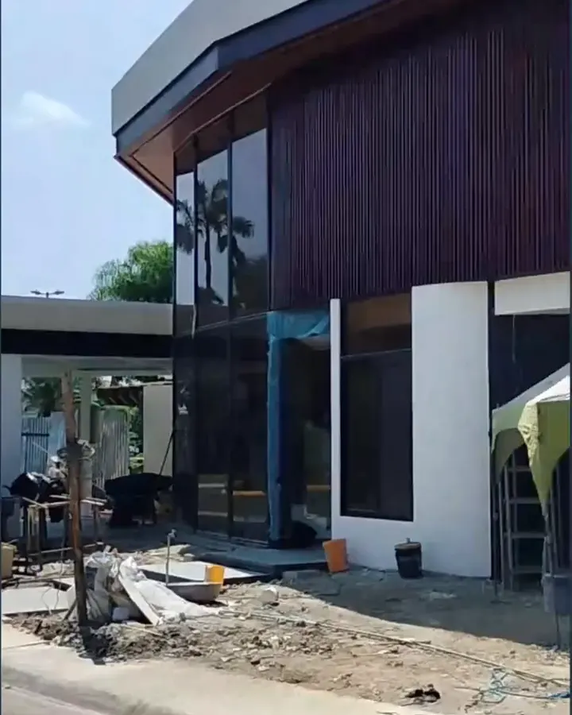
El detalle que más llama la atención de esta casa es la ventana subacuática del sótano. Aquí te explico cómo se construye:
▶ Cómo construir una ventana subacuática para piscinas con vidrio templado de 40 mm — canal Arquitecto Gratis
El proceso completo en video
▶ Lista: Curso completo de cómo construir tu casa de 2 a 3 pisos — ver en YouTube
¿Quieres saber cuánto cuesta cada etapa? Lo explico en cuánto cuesta construir una casa de 2 pisos en Guayaquil.

¿Vas a construir? Empecemos por el diseño
Diseñamos y construimos tu casa de principio a fin, con presupuesto por etapas y precio cerrado por etapa.

Arquitecto en Guayaquil, Samborondón y Daule. Más de 360 mil personas siguen sus videos de obra como "Arquitecto Gratis".